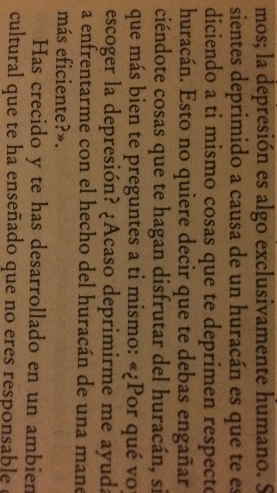

La depresión es algo exclusivamente humano. Si te sientes deprimido a causa de un huracán es que te estás diciendo a ti mismo cosas que te deprimen respecto al huracán.
Esto no quiere decir que te vayas a engañar diciéndote cosas que te hagan disfrutar del huracán, sino que más bien te preguntes a ti mismo "¿por qué voy a escoger la depresión?"
¿Acaso deprimirme me ayuda a enfrentarme con el hecho del huracán de una manera más eficiente?
